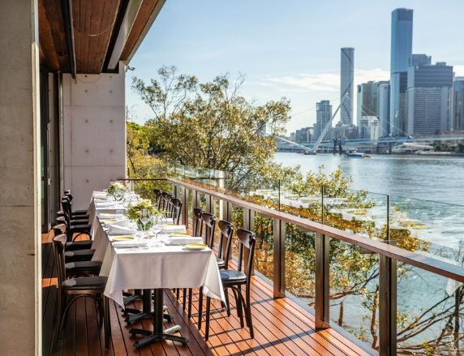
Event
Retina by the river
QEI invites early career optometrists to an exciting evening of retina education.
Event detailsClinical advances, research discoveries, education and Foundation news from the Queensland Eye Institute.

QEI invites early career optometrists to an exciting evening of retina education.
Event details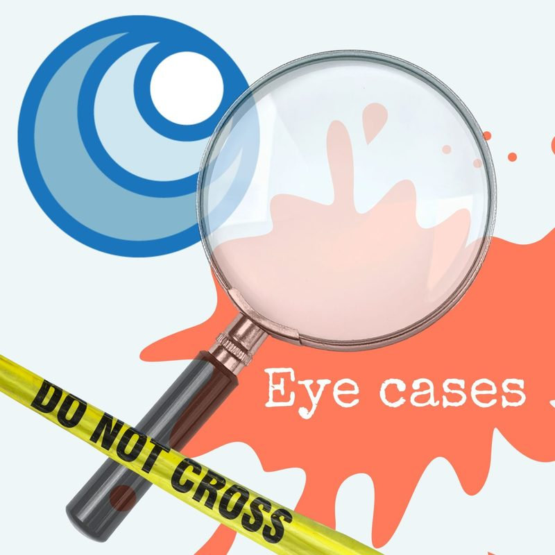
QEI invites early career optometrists to an exciting evening of retina education.
Event details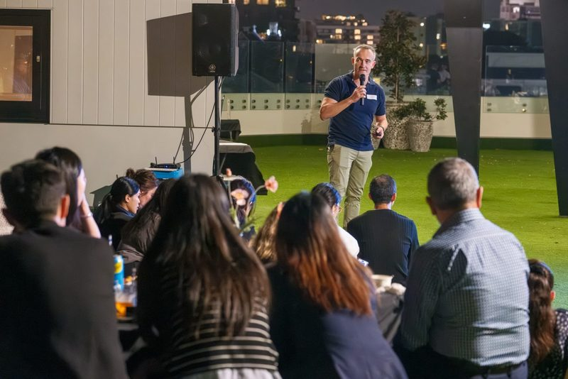
QEI invites early career optometrists to an exciting evening of retina education.
Event details
Electrophysiology testing is particularly helpful for patients where standard clinical tests are inconclusive as they rely on patients telling...
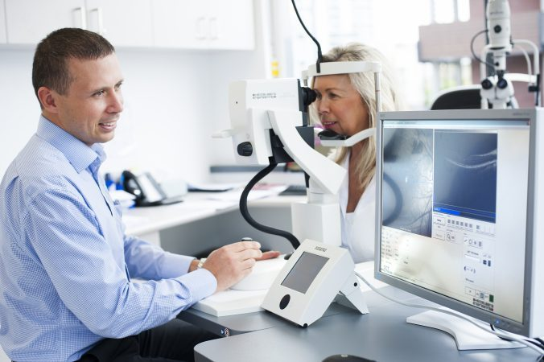
A clinical trial runs according to a plan known as a ‘protocol’. The protocol describes what’s being investigated and safeguards participants’ health.
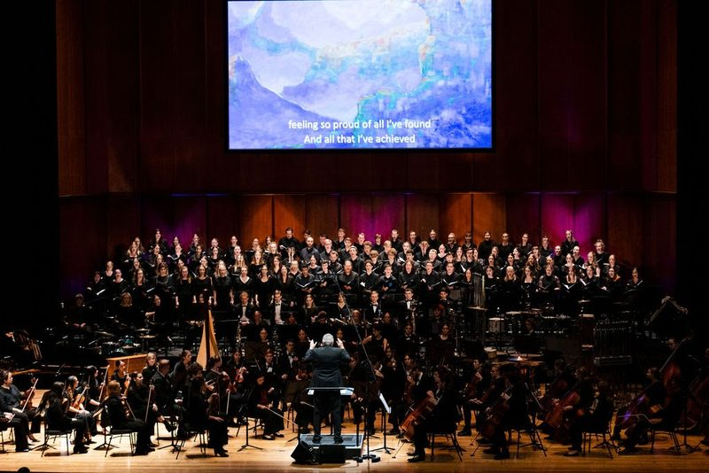
Billed as a performance to save sight, the Last Seen concert on Friday 21st April left the audience gasping and applauding and fumbling for...

The proceeds from Last Seen, a multisensory exhibition and performance, will support Queensland Eye Institute’s research focus on inherited eye diseases.

Click to read about our highlights of 2022 and our Christmas wishes for 2023.

QEI welcomes Professor Jeff Dunn AO and Jane Prentice to the QEIF Board.
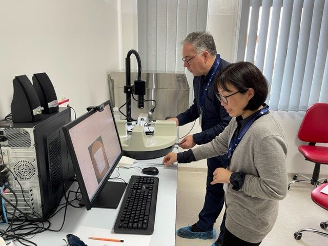
Professor Traian Chirila, Professor Mark Radford, and Dr. Shuko Suzuki from QEI working with a team of UMFST researchers, have started on a series...

A world-first international registry for vitreoretinal lymphoma can now be expanded with a new grant bringing hope to improved rare eye cancer...

Clinical Assistants and Optometrists play a key role at the Queensland Eye Institute Clinic. Click to read about the work of Dr Rebecca Cox, a...
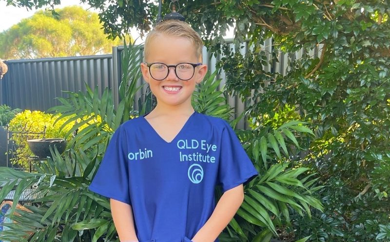
Strabismus is the most common eye disorder in children with about 3-5% of Australians affected by the condition. Click to read about one young...
Click to read about how QEI can put our sustainability goals into practice.
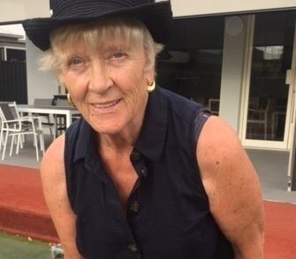
Clinical Trials give hope to so many people. For Giselle, research gives her hope to see again. Click to read more.

Glaucoma is one of the biggest risks to eye health; a silent disease which does not manifest itself until the later stages when it is much more...

National Sunnies Day on December 6th focuses on raising awareness of eye damage from sun exposure. This year we're asking our supporters to GiVE...

Associate Professor Anthony Kwan has been a Consultant Ophthalmologist, Retina and Macula Specialist and Vitreoretinal Surgeon at Queensland Eye...

We may be well-versed in knowing what to eat to keep our cholesterol down but we may be less aware on what to eat to keep our eyes healthy. Click...

Age-related macular degeneration (AMD) is the most common type of macular degeneration. Another form of macular degeneration is called Stargardt...
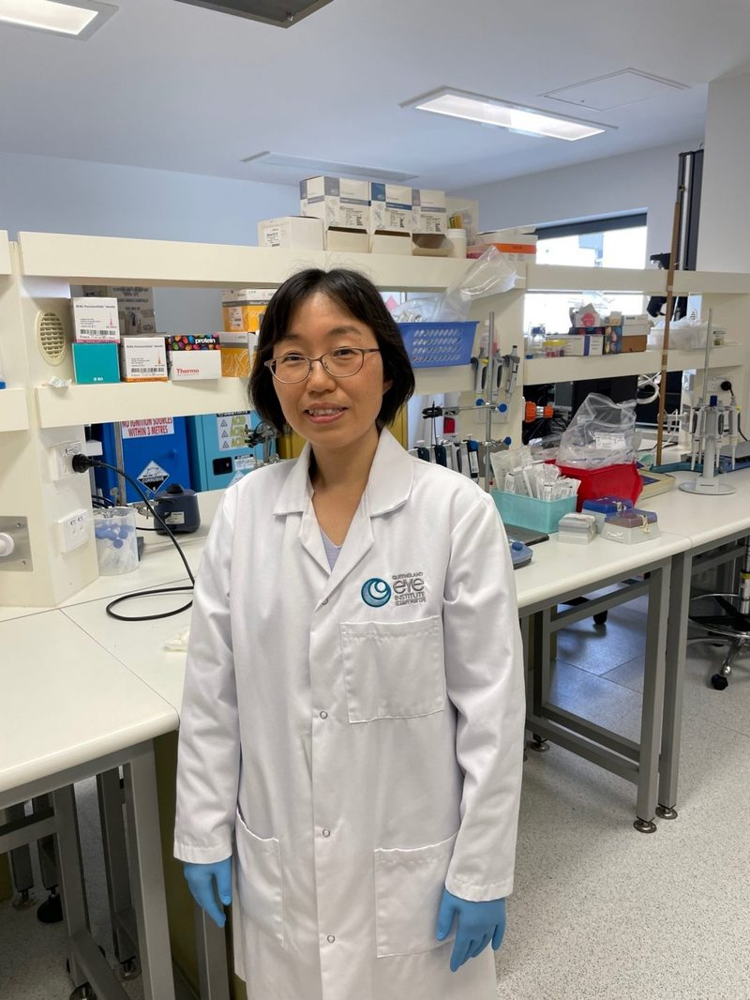
QEI is researching the benefits of developing silk protein-based biomaterials (from silk cocoons) for ocular tissue repair (cornea and retina)....
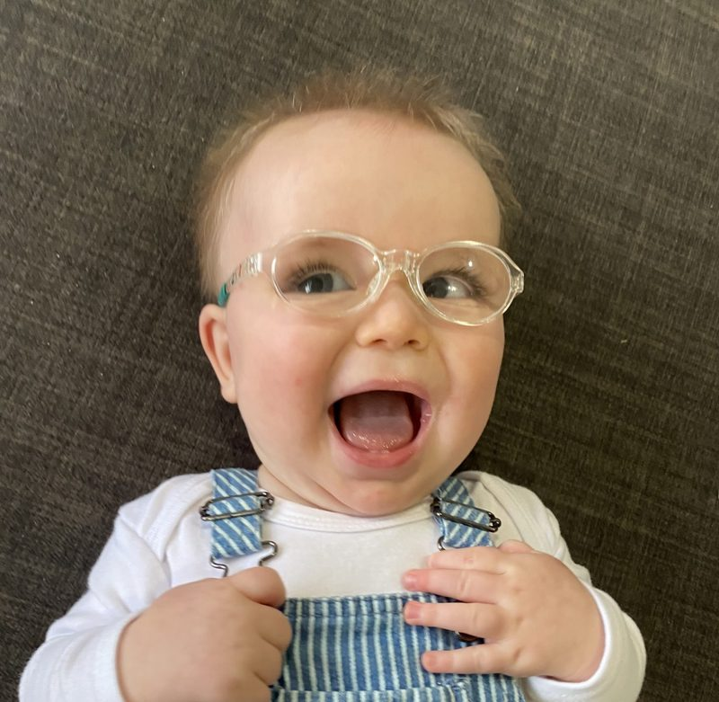
Max has a rare genetic mutation, Leber's congenital amaurosis (LCA), which affects the retina and is present from birth. Help Us Help Max by...

The QEIF Board brings together a diverse group of respected leaders, with significant experience in health, medicine, business, finance and law.

Glaucoma affects vision by causing irreversible damage to the optic nerve. Click to read our interview with Dr Chiang who specialises in glaucoma,...

It is hoped that the registry will assist doctors and researchers to better understand the most effective treatments for lymphoma of the eye.
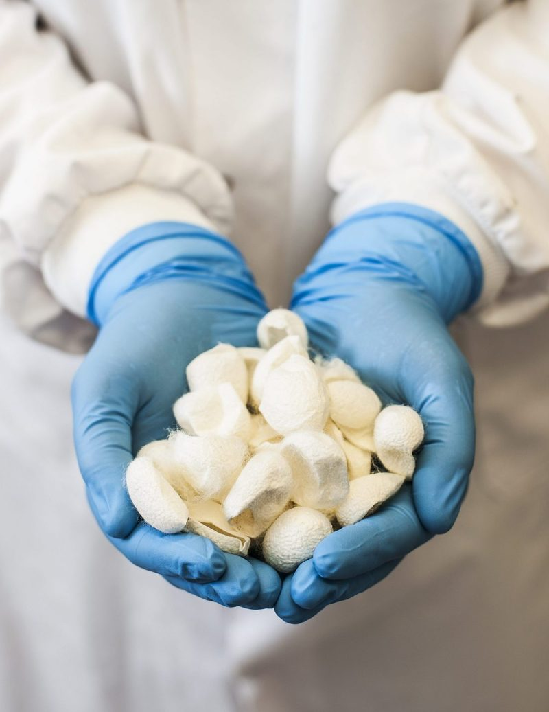
QEI researchers are currently investigating the role of a silk cocoon protein called sericin as an antioxidant agent in the eye.
Associate Professor Anthony Kwan was recently appointed Chair of the Research Committee at Macular Disease Foundation Australia (MDFA). Click to read more.